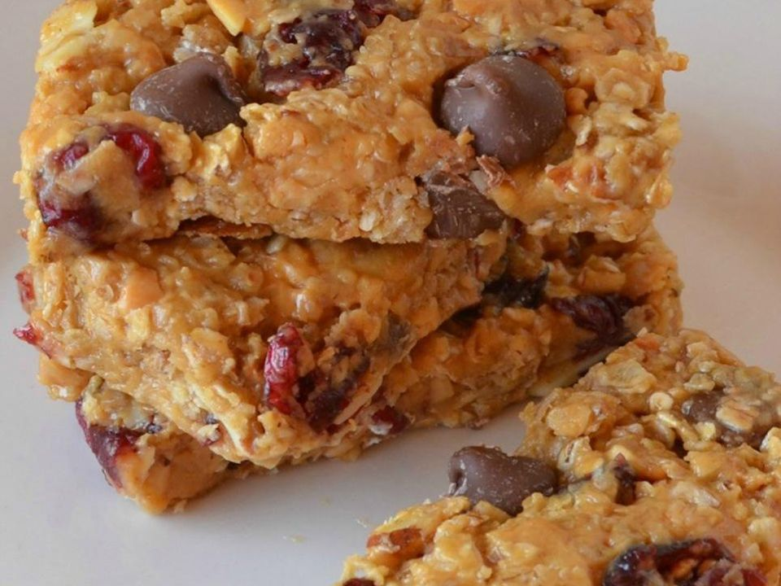

<!DOCTYPE html>
<html lang="en"></html>
<head>
    <meta charset="UTF-8">
  
    <title>Document</title>
    <link rel="stylesheet" href="granola_bars.css">
</head>

<body>
<!--     <div class="chefs-hat">
        <a href="../index.html">
          
        </a>
      </div> -->
      
    <h1>Granola Bars</h1>
    

    <h2>Description</h2>

    <p>Tasty looking granola bars that seem easy to make</p>

    <p>These no-bake granola bars are a quick and easy snack or breakfast option that
        is perfect for busy people. They are made with simple ingredients that you
        probably already have on hand, such as rolled oats, peanut butter, flaxseed, 
        honey, dried cranberries, chocolate chips, and almonds. To make the bars, simply 
        stir all of the ingredients together in a bowl, then press them into a 9x11-inch 
        baking dish. Refrigerate the bars for at least 1 hour, then cut them into 12 bars
        and enjoy. The bars are chewy and satisfying, and they are a great source of 
        protein and fiber.</p>

    <h3>Ingredients</h3>
    <ul>
        <li>2 cups rolled oats</li>
        <li>1 ¼ cups chunky natural peanut butter</li>
        <li>1 cup ground flaxseed</li>
        <li>¾ cup honey</li>
        <li>¾ cup dried cranberries</li>
        <li>½ cup chocolate chips</li>
        <li>¼ cup sliced almonds</li>
    </ul>
    <h4>Steps</h4>
    <ol>
        <li>Stir oats, peanut butter, flaxseed, honey, cranberries, chocolate chips, 
            and almonds together in a bowl; press into a 9x11-inch baking dish, using 
            the back of a spatula to press into a flat layer.
        </li>
        <li>Refrigerate mixture at least 1 hour.</li>
        <li>Cut into 12 bars and wrap each individually in plastic wrap for storage.</li>
        </ol>
</body>
</html>